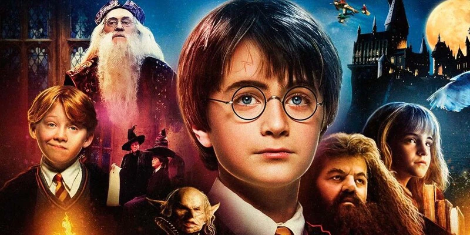
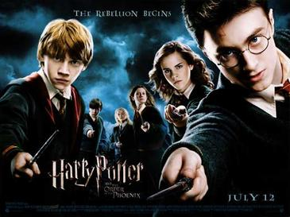
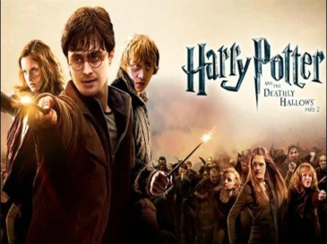

Filmes do Harry Potter em ordem cronológica
Harry Potter e a Pedra Filosofal
(2001)

Harry Potter e a Câmera Secreta
(2002)

Harry Potter e a Prisioneiro de Azkaban
(2004)
Harry Potter e o Cálice de Fogo
(2005)

Harry Potter e a Ordem da Fênix
(2007)

Harry Potter e o Enigma do Príncipe
(2009)

Harry Potter e as Relíquias da Morte
Parte 1 (2010)

Harry Potter e as Relíquias da Morte
Parte 2 (2011)

Joanne "Jo" Rowling, OBE, FRSL, mais conhecida como J. K. Rowling, é uma escritora, roteirista e produtora cinematográfica britânica, notória por escrever a série de livros Harry Potter
Se deseja saber mais sobre a vida da escritora J. K. Rowling acesse o seu Wikipédia